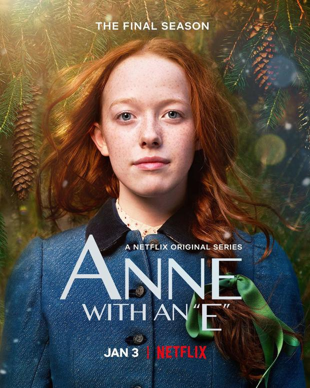
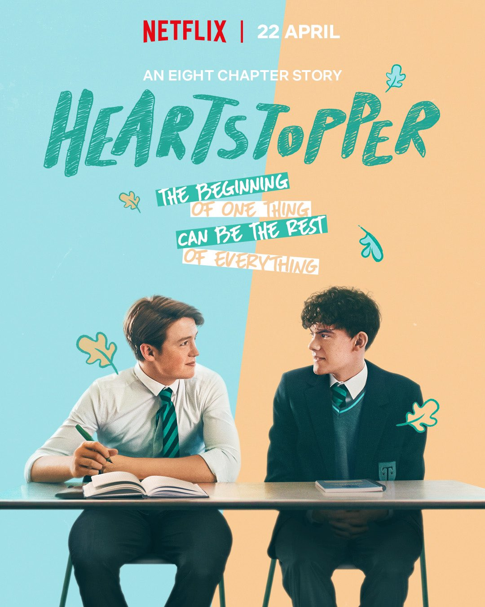
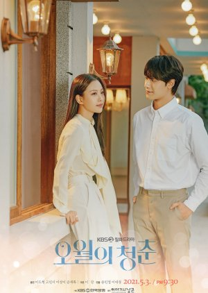

Curriculum
Crisbel Ceballo Santos
Calle Penetración Este, Luz Consuelo. Avenida Independencia || Telefono: 849-2870911
DATOS GENERALES
Cedula: 402-3398864-7
Fecha de Nacimiento: 23/03/2004
Nacionalidad: Dominicana
Email: criiceballo@gmail.com
FORMACION ACADEMICA
Estudios Primarios: Escuela Juan Pablo Duarte. Tireo, Constanza
Estudios Secundarios: Liceo Darío Antonio Peña Suriel. Tireo, Constanza
Estudios Universitarios: UTESA Santo Domingo (5to Cuatrimestre)
IDIOMAS DOMINADOS
Español
Ingles Basico
PASATIEMPOS
Leer
Escribir
Escuchar musica
SERIE FAVORITAS
  
MI VIDEO DEL FUTURO